谷の間8室
十畳の和室に広縁。谷側の窓。
1泊2食 28,600円〜 1名・2名利用時
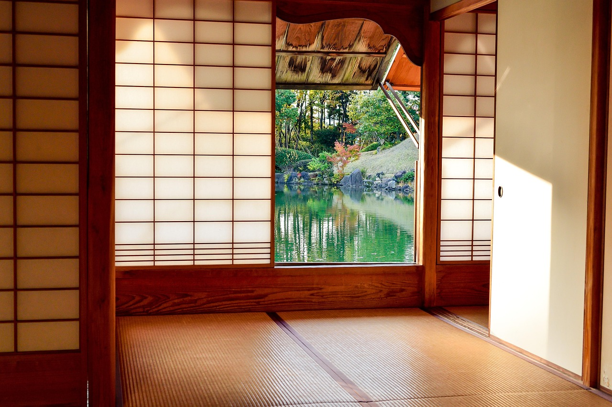
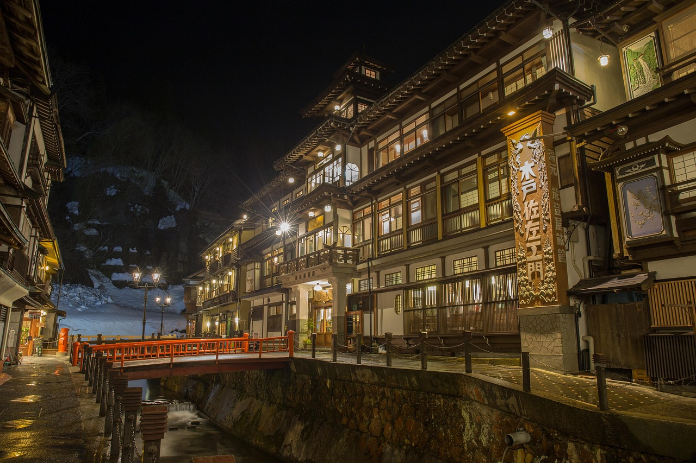
長野電鉄の湯田中駅から、送迎の車で10分。石畳の温泉街を歩いて、いちばん奥がゆらぎです。玄関で靴を脱いだら、ロビーで抹茶と栗の菓子を。鍵は、九つの外湯をめぐるための木の鍵です。
送迎は 14:30 ／ 15:30 ／ 16:30 に駅へ。前日までにお知らせください。
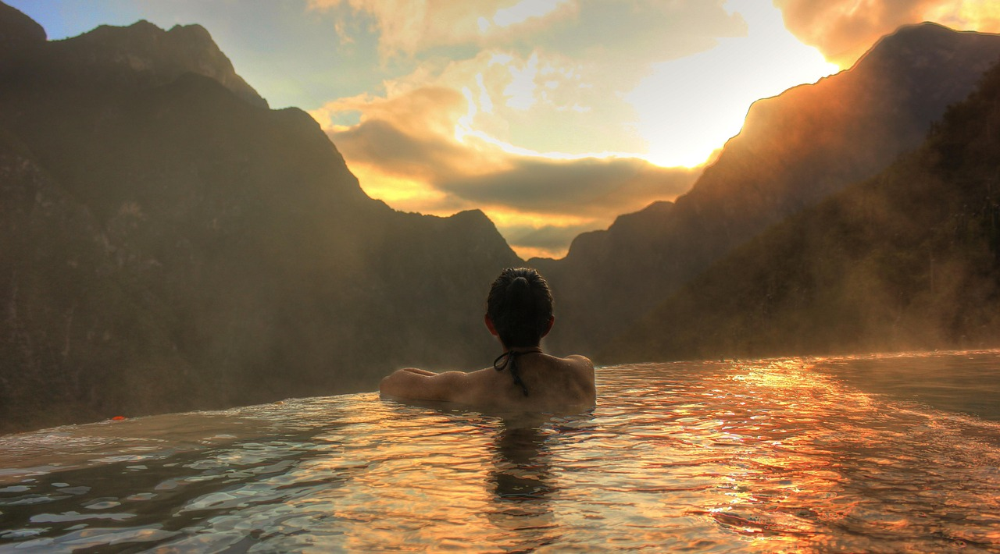
敷地の奥から湧く自家源泉を、そのまま湯船に注いでいます。少し熱めの42度。露天は谷に向かって開いていて、夕方は山の影がゆっくり降りてくるのが見えます。
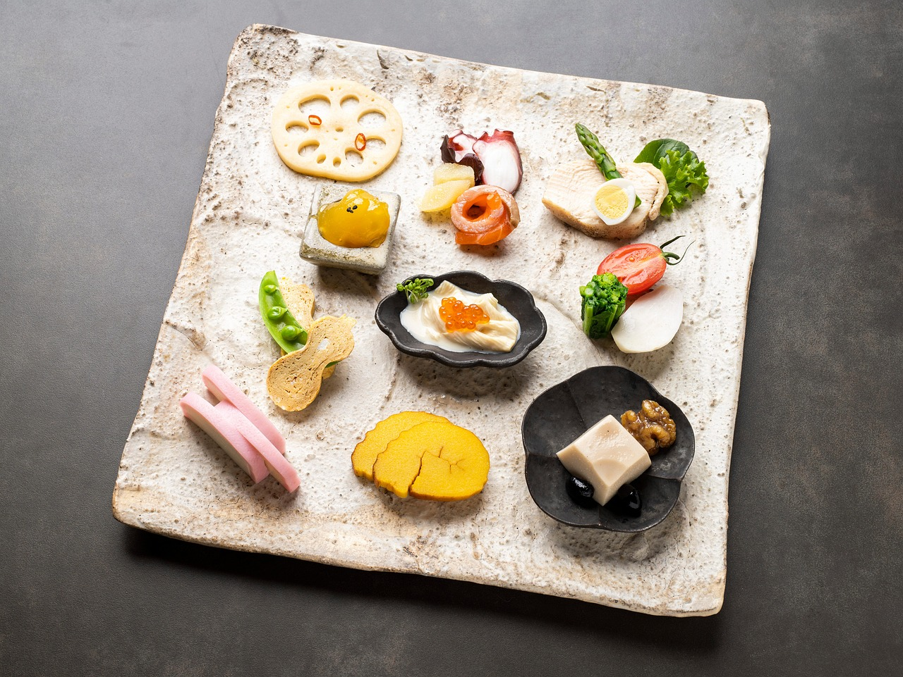
部屋食ではなく、囲炉裏のある食事処で。献立は仕入れで毎日変わります。11月はこのような内容です。
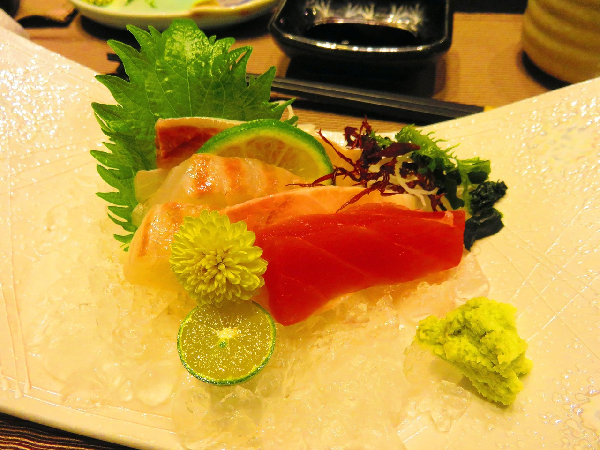
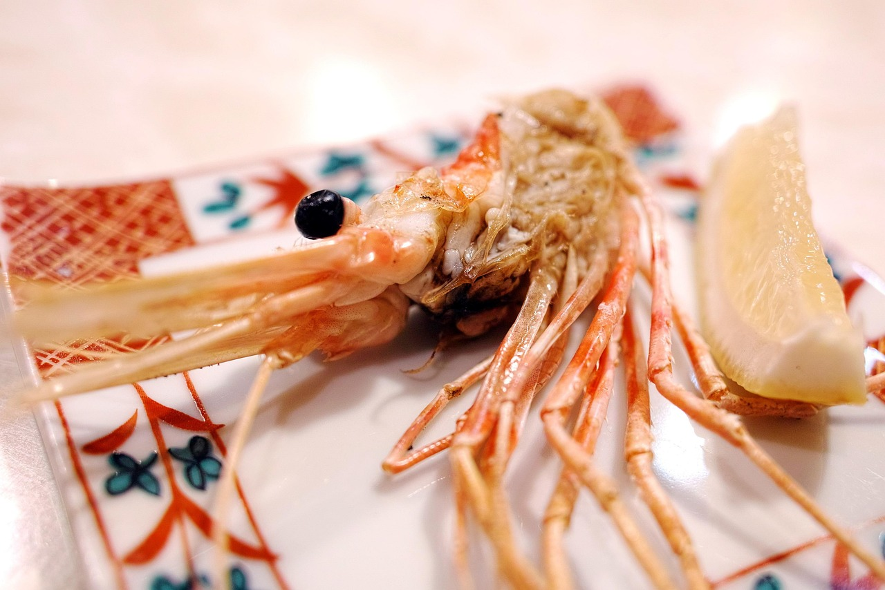
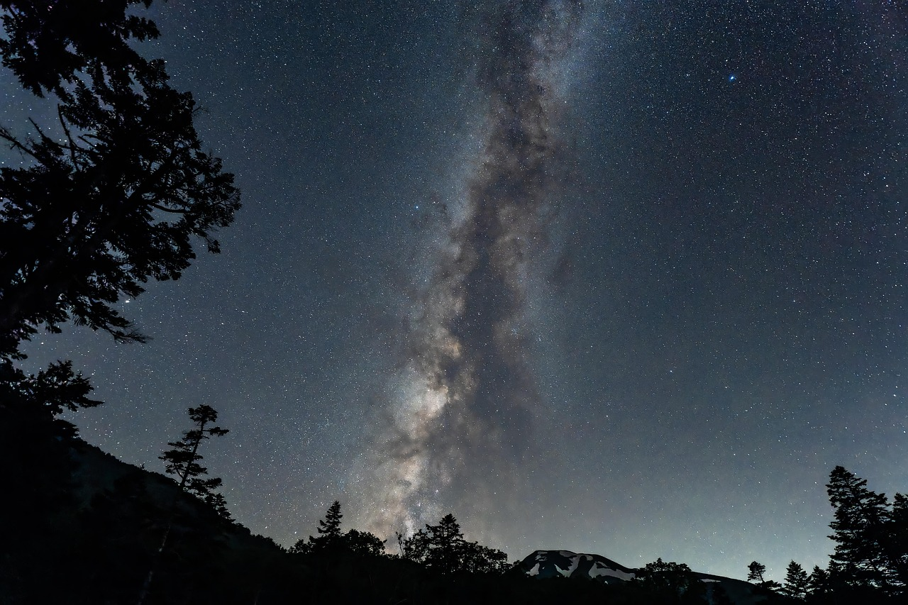
部屋にテレビはありません。窓を少し開けると、谷川の水音と、外湯に向かう下駄の音がします。露天「星見」は夜通し入れます。晴れた夜は、天の川が見えます。
夜食に、おにぎりと味噌汁を 22時までお部屋へ。
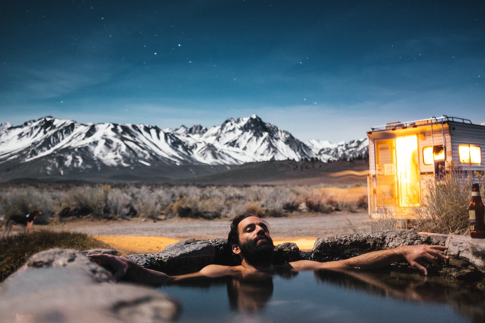
夜のあいだに気温が下がって、朝の露天は湯気で真っ白になります。誰もいない時間に、もう一度。湯上がりに、ロビーで淹れたての珈琲を。
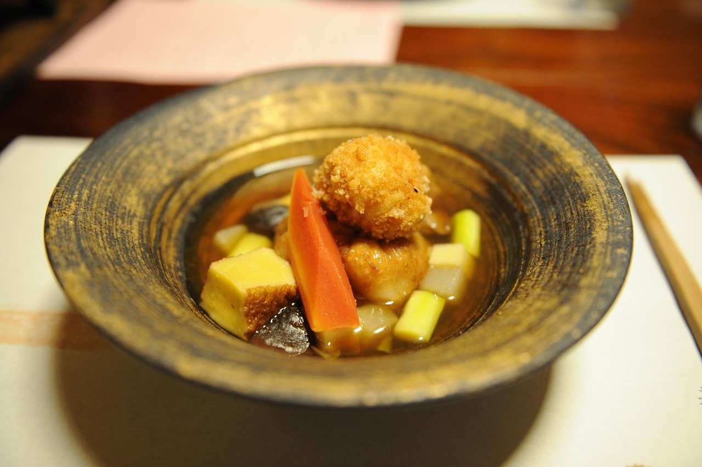
朝餉は、湯豆腐に信州味噌、川魚の一夜干し、温泉卵、自家製の漬物。ごはんは土鍋で炊いて、おかわりは好きなだけ。朝餉の時間は 7:30 から 9:00 のあいだで選べます。
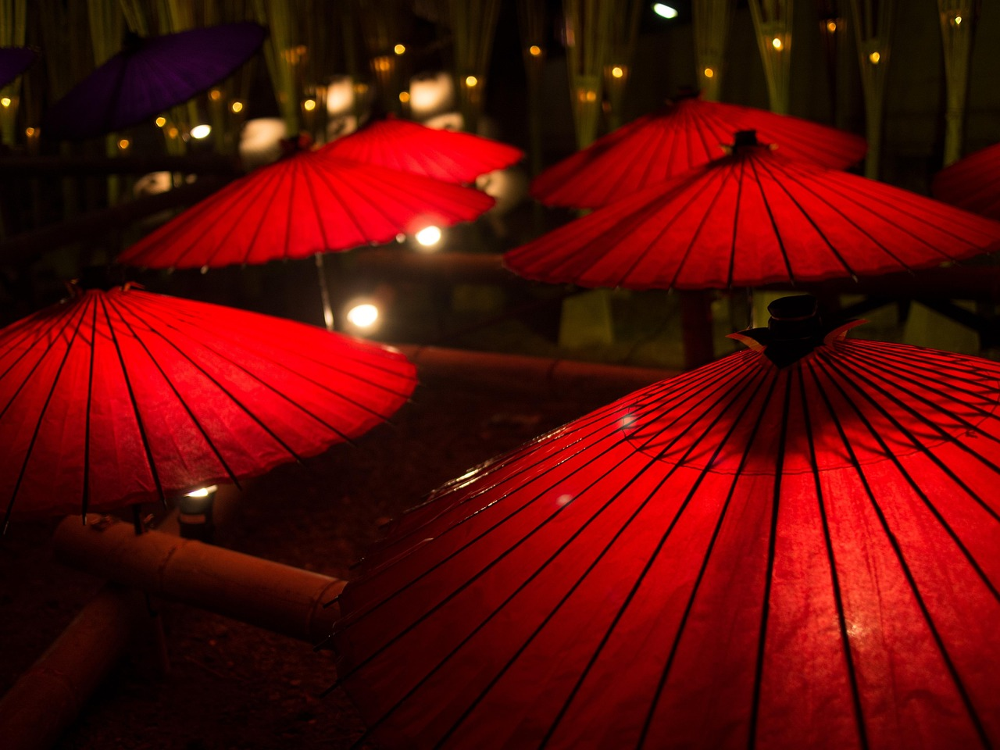
チェックアウトは10時。お荷物は送迎の車までお運びします。帰りに温泉街を歩くなら、荷物は夕方まで玄関で預かります。
再訪のお客さまには、前回と違う部屋をご用意しています。
全12室。どの部屋も窓が谷に向いています。広さと湯の有無で三つの型があります。
十畳の和室に広縁。谷側の窓。
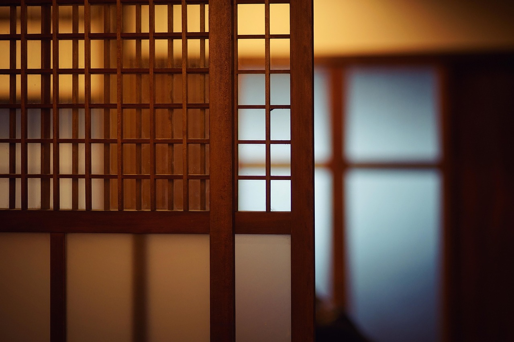
十二畳＋次の間。檜の内風呂つき。
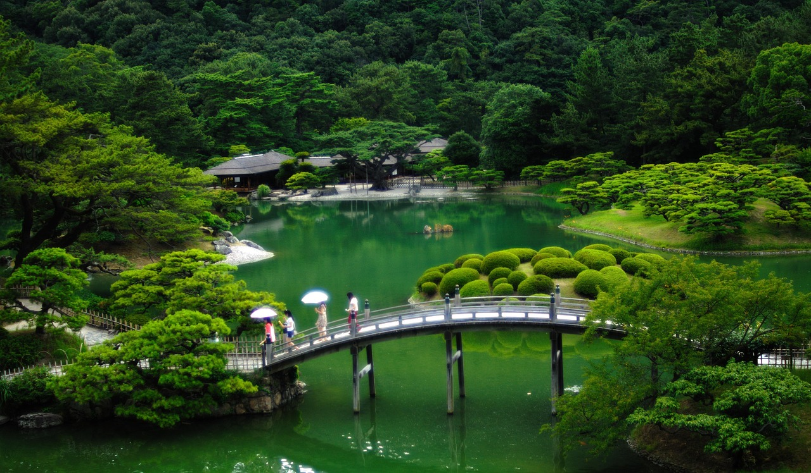
庭に面した一棟。源泉かけ流しの露天つき。